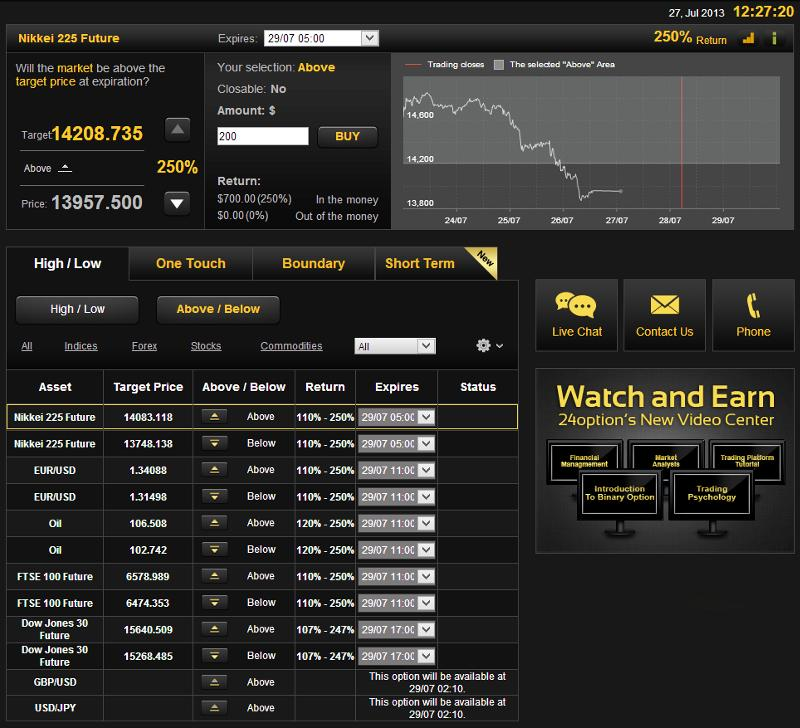
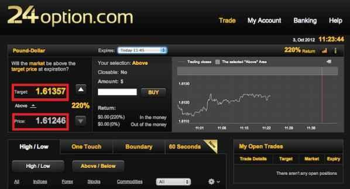
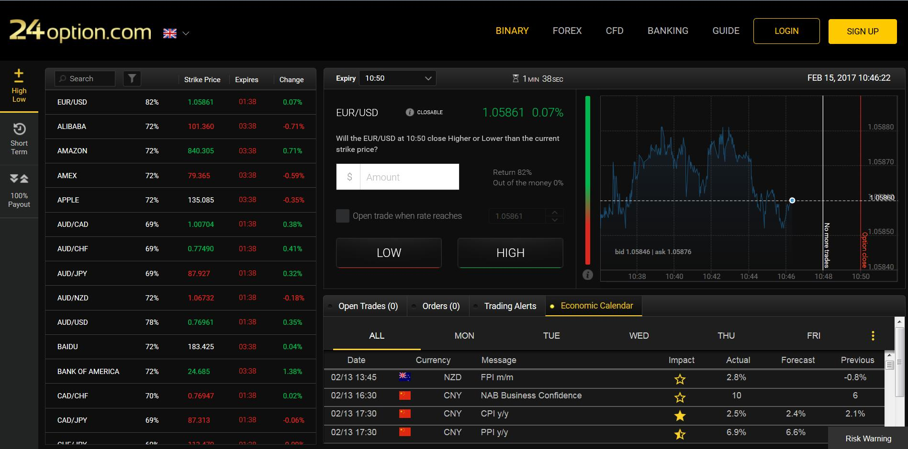
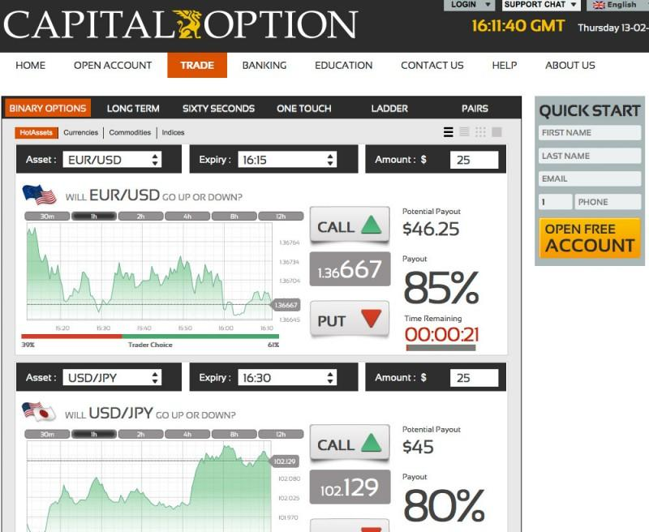
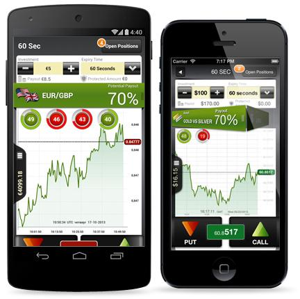
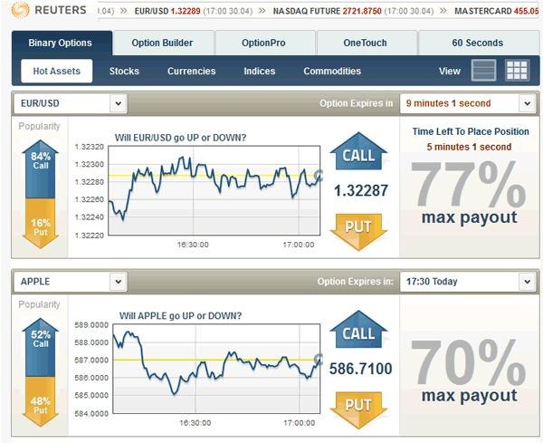

Археологія інтерфейсів (2010–2017)
Незважаючи на різні бренди, більшість платформ мали майже однакову логіку: CALL / PUT Фіксована виплата Короткі експірації 60 Seconds One Touch Boundary







